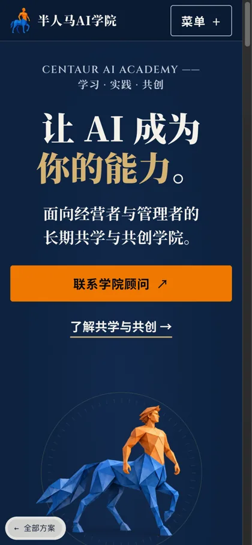
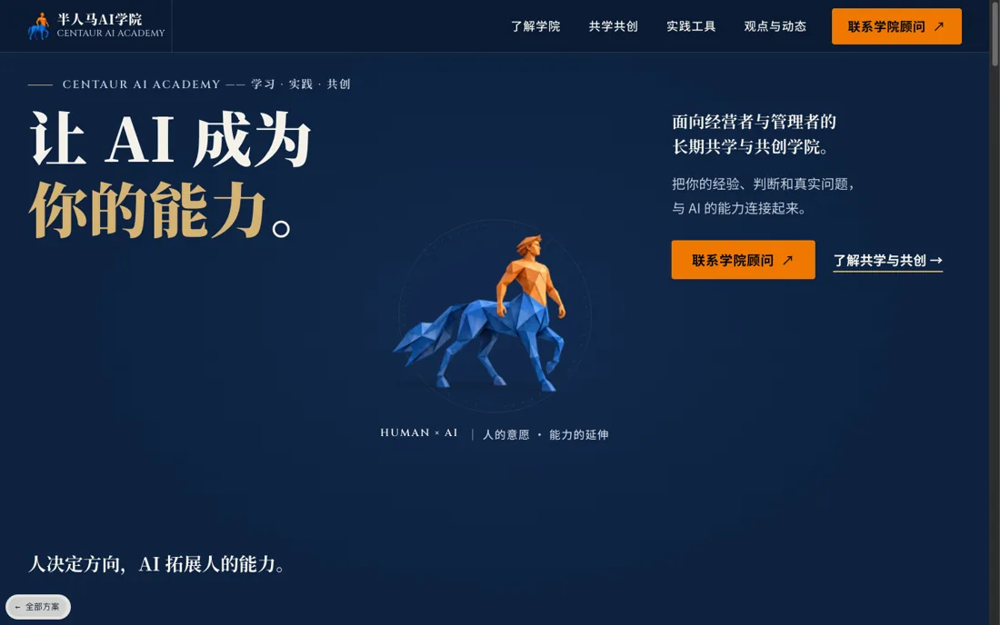
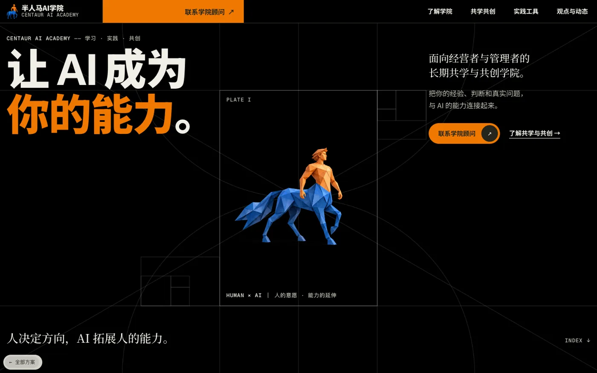
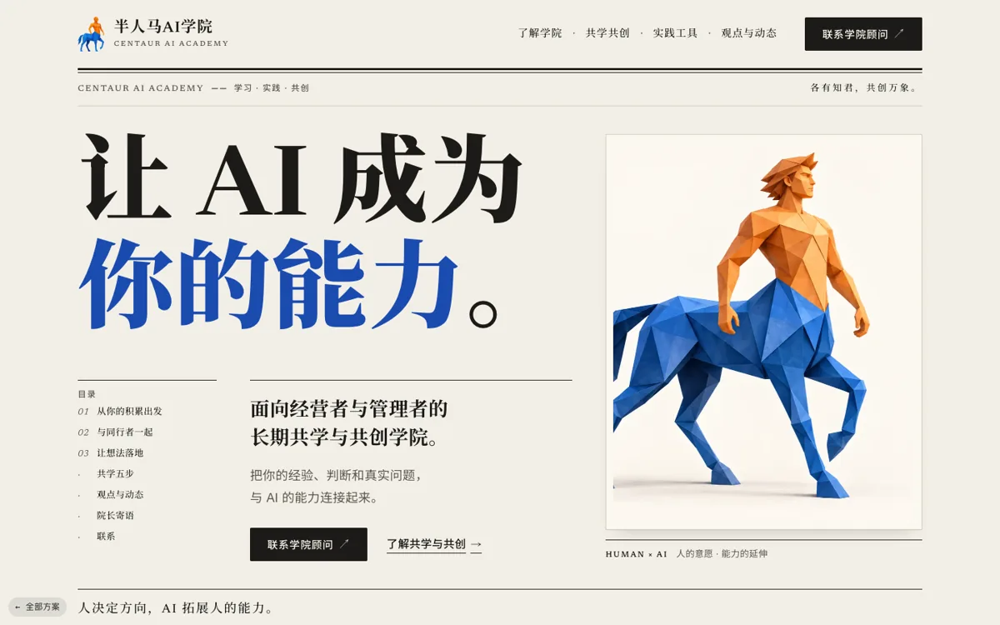
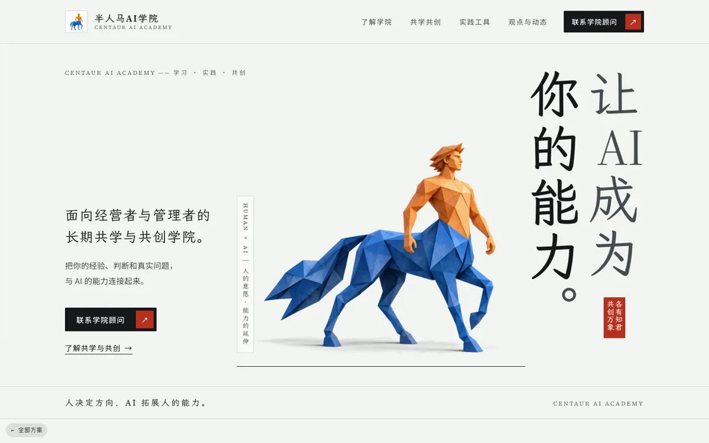
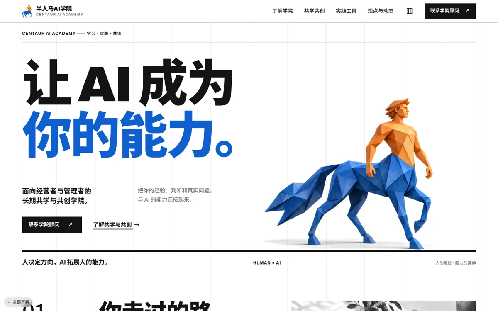
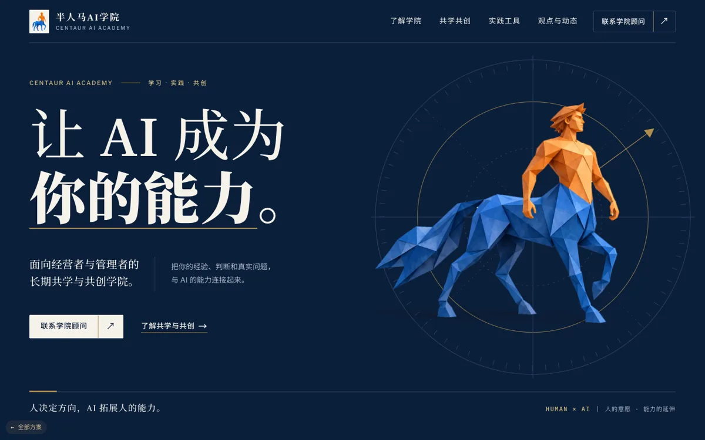
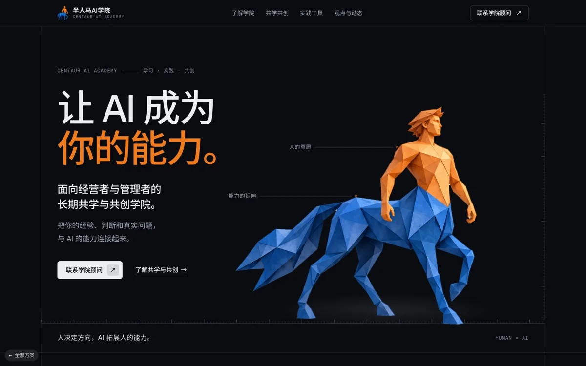
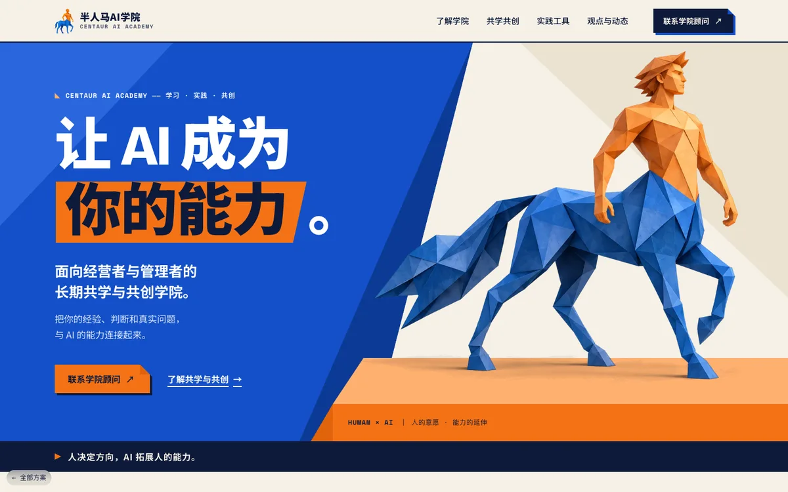

同一份首页文案、同一批插画，六种美术范式。每套都有完整的 DESIGN.md（色板、字体、间距、组件、Do / Don't、Agent Prompt Guide）、可滚动的首页预览和一页组件样张。当前完成 6 / 6。
第三轮被嫌「太好看」，第四轮被嫌「太土」。这一轮两版分别从两头往中间走：象牙与深海蓝从第三轮加分量，藏青金章从国潮科技减花样。下面这把尺子是评委给所有版本打的土度分。建议用手机打开看。
这次复评两个中间版本都落在 4.5 到 5.5 之间，不用再调。建议拿 b 藏青金章给老板当主推，它最接近老板要的「土里带着炫酷」；a 象牙与深海蓝作备选，站主如果想更克制可以选它。之后改动只动文案和图片，别再加金色渐变、发光、纹样这类装饰，加任何一样都会把土度拉回 7 以上。
老板说上一版「太好看了，要土一点的」。这一轮按 45–60 岁企业主在微信里看的习惯做：字大、气派、有仪式感，再加半人马登场的光效动画。建议用手机打开看。
先拿国潮科技给老板看，它最贴近“土中带炫”，品牌原有的蓝橙也保住了。发之前把手机端登场结束后那一屏空白补上，别让客户以为页面卡了。中国红当备选：老板要是说“还不够土”就上它，但首屏要先把半人马提上来。黑金跟上一版太像，不建议当主推，否则容易被一句“还是黑的”打回来。






